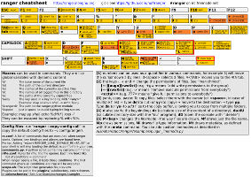

Documentation
Links
- The official ranger wiki
- ranger(1) manpage
- Source code documentation generated with pydoc
- README, HACKING, doc/*
- Arch Linux Wiki
- Running "make options" will inform you about how to generate documentation yourself
Cheat sheet
The cheat sheet for version 1.7.0: (png, svg)
{kind=link}
{kind=link}
Features
- UTF-8 Support
- Multi-column display
- Preview of the selected file/directory
- Common file operations (create/chmod/copy/delete/...)
- VIM-like console and hotkeys
- Renaming multiple files at once
- Automatically determine file types and run them with correct programs
- Change the directory of your shell after exiting ranger
- Tabs, Bookmarks, Mouse support
- True Color Image previews [How to enable]
- Video thumbnails [How to enable]
Dependencies
- Python (tested with version 2.7, 3.1, 3.2, 3.3, 3.4) with support for ncurses and (optionally) wide-unicode.
- A pager (less by default)
Optional:
- file for determining file types
- The python module chardet, in case of encoding detection problems
- "sudo" to use the "run as root"-feature
- w3m for previewing images in "true color".
{kind=link}
Optional, for enhanced file previews (with "scope.sh"):
- img2txt (from caca-utils) for previewing images in ASCII-art
- highlight for syntax highlighting of code
- atool for previews of archives
- lynx, w3m or elinks for previews of html pages
- pdftotext for pdf previews
- transmission-show for viewing bit-torrent information
- mediainfo or exiftool for viewing information about media files
{kind=link}